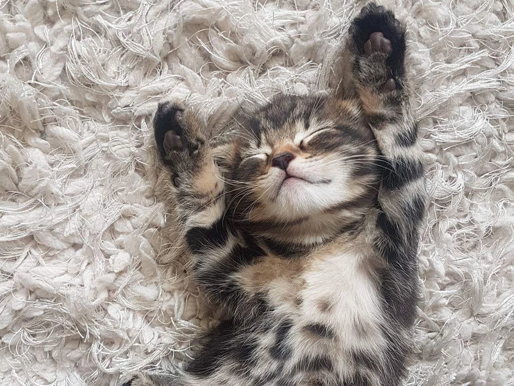

¿Que son los gatos?
es un mamífero carnívoro doméstico, pequeño y ágil, con pelaje suave, garras retráctiles, bigotes sensibles y sentidos agudísimos, especialmente la vista nocturna y el oído, que utiliza para cazar, comunicarse y mantener el equilibrio, siendo un animal independiente pero afectuoso, conocido por su ronroneo y capacidad de dormir largas horas
¿Por que son buenos como mascotas?
Los gatos son excelentes mascotas por su independencia, bajo mantenimiento, limpieza extrema y capacidad para reducir el estrés y la presión arterial de sus dueños a través del ronroneo. Son ideales para espacios pequeños, cariñosos, no requieren paseos y su compañía constante ayuda a aliviar la soledad y mejorar la salud mental
El objetivo estrella de esta pagina
